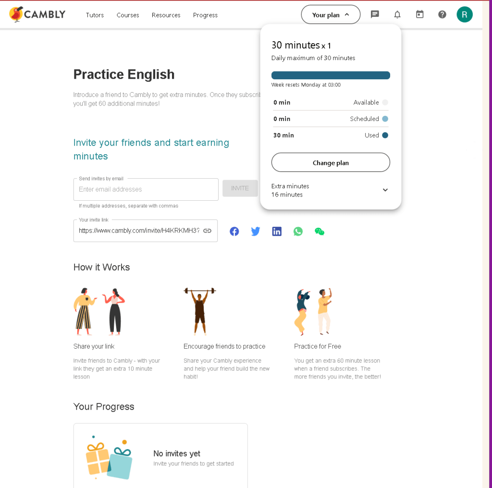

Unlocking Creative Potential: How Cambly is Revolutionizing Studio Work and Idea Development
In the fast-paced world of creative studios, where ideas flow like rivers and innovation is the currency, finding the right tools to facilitate this creative process is paramount. Enter Cambly, a platform originally designed to help people improve their English speaking skills. But for those in the know, Cambly is proving to be so much more—a versatile tool that's transforming how we brainstorm, refine, and perfect our creative ideas.
A Studio’s Secret Weapon
Imagine this: you're in your studio, surrounded by half-finished sketches, draft scripts, and a plethora of raw, unpolished concepts. You need a sounding board, a fresh perspective, and someone who can engage in thoughtful, constructive dialogue. This is where Cambly shines.
1. Real-Time Feedback and Collaboration
One of Cambly’s standout features is the availability of tutors who are not just native English speakers, but also skilled conversationalists from diverse backgrounds. When working on a new project, being able to discuss your ideas in real time with someone who can provide immediate feedback is invaluable. These tutors often bring unique perspectives, honed from different cultures and disciplines, enriching your creative process.
2. Emotional Connection and Empathy
Creative work is deeply emotional. Whether you’re a writer, artist, or filmmaker, the best work often comes from a place of genuine feeling. Cambly tutors excel in creating an empathetic environment where you can express your ideas without judgment. They listen actively and respond thoughtfully, which helps you feel supported and understood. This emotional connection can be a catalyst for unlocking deeper layers of creativity and authenticity in your work.
3. Refining Ideas with Nuanced Communication
Effective communication is the backbone of any successful project. Cambly tutors help you articulate your ideas more clearly, whether you're preparing for a presentation, drafting a proposal, or simply trying to find the right words to express a complex concept. This practice not only improves your language skills but also hones your ability to convey your ideas succinctly and persuasively.
4. Overcoming Creative Blocks
We all hit creative blocks—those frustrating moments when ideas just won’t flow. Sometimes, talking it out is the best way to break through these barriers. Cambly tutors can guide you through brainstorming sessions, ask probing questions, and offer new angles on a problem, helping you to see your project from a different perspective and reignite your creative spark.
The Tutors: Your Creative Allies
What sets Cambly apart is the quality and diversity of its tutors. They are not just language experts; they are often individuals with rich, varied experiences in different fields. This diversity means you can find a tutor who understands your specific industry and the challenges you face.
For instance, if you're working on a screenplay, you might connect with a tutor who has a background in theater or film. If you're developing a new product, a tutor with experience in business or marketing can provide valuable insights. This tailored approach ensures that the support you receive is relevant and impactful.
Embracing the Future of Creative Work
In a world where collaboration is increasingly digital, platforms like Cambly are leading the way in redefining how we work together. They offer a unique blend of human interaction and technological convenience, making them an ideal tool for anyone looking to enhance their creative process.
Cambly is not just about learning English; it’s about fostering creativity, collaboration, and communication. It's about unlocking your full potential and pushing the boundaries of what you can achieve. So, the next time you're in your studio, staring at a blank canvas or an empty page, consider firing up Cambly. You might just find that the perfect idea is only a conversation away.
Embrace the unexpected, explore the unknown, and let Cambly be your guide on this exciting creative journey. The tutors are not just there to teach you—they're there to inspire, challenge, and elevate your work to new heights.
Talking time and resets

Prepare the video and talk on it and see their interaction
if they like the video or ifferent people would definetely help you.
Imported from rifaterdemsahin.com · 2024